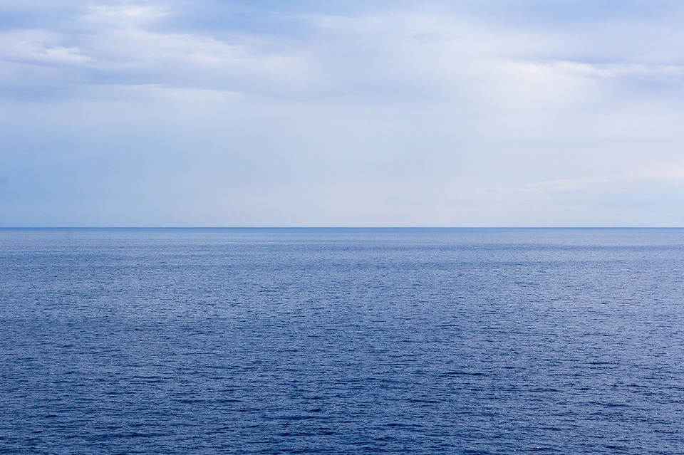

Big Wave Surfing
What is Big Wave Surfing?
Big wave surfing is a discipline within surfing in which experienced surfers paddle into, or are towed into,
waves which are at least 20 feet (6.2 m) high, on surf boards known as "guns" or towboards.

The biggest waves in the world:
- Heavy, Big, Fast, and Deadly.
- Praia do Norte | Nazaré, Portugal.
- Jaws/Peahi | Maui, Hawaii.
- Teahupoo | Tahiti, French Polynesia.
- Shipstern Bluff | Tasmania, Australia.

The biggest waves in the world
Every year, when the World Surf League releases its entries for the wipeout of the year awards,
the same words pass
across thousands of lips:
‘How on earth didn’t they die?!’
While there have been several high profile deaths over the past few decades, surfing, even in giant waves, is actually
nowhere near as deadly as it looks. In the last ten years only four big wave surfers have died; Sion Milosky at
Mavericks in 2011, Kirk Passmore, at Alligators, Hawaii in 2013, Alec Cook in Hawaii in 2015 and Zander Venezia in
Barbados last year. And, many of the world’s most renowned big wave spots, like Jaws and Nazaré have never claimed
the life of a big wave surfer.
Pipeline, on the North Shore of Oahu is well documented as the most dangerous surf spot in the world, claiming the
lives of 14 surfers since the 60’s and playing host to many more serious injuries and near-misses. However, considering
the dense pack, reported to be up to 40 strong during some sessions and the wave’s array of hazards, including
underwater caves, the death toll is lower than one might expect. Similarly, the ridiculously heavy waves of Mavericks,
Teahupoo (which means ‘severed head’ in English) and the shark-infested Shipstern Bluff, thankfully only have a
combined death toll in single figures.
